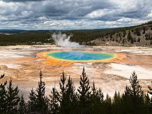

Yellow Stone
Jules Stewart
Yellowstone National Park is an American national park located in the western United States, largely in the northwest corner of Wyoming and extending into Montana and Idaho. It was established by the 42nd U.S. Congress with the Yellowstone National Park Protection Act and signed into law by President Ulysses S. Grant on March 1, 1872.